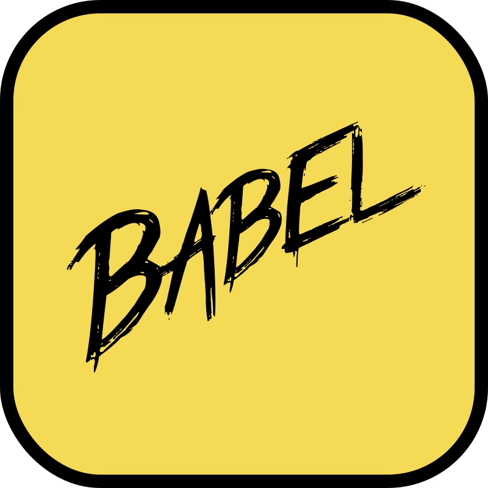
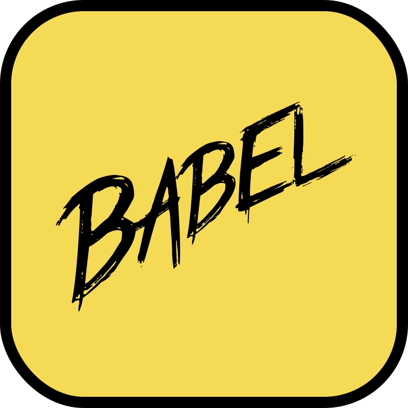

-
MURILO FERREIRA
Desenvolvedor Web Front-End
Sou um Desenvolvedor Front-End, com habilidades em HTML, CSS e JavaScript. Sou um apaixonado por tecnologia, inovação e conhecimento que está sempre em busca de novos,desafios que me permitam aprendizado constante, desenvolvimento pessoal e profissional.
Atualmente me aprofundando na linguagem JavaScript por meio das bibliotecas React e Babel e dos frameworks Bootstrap e Vue, afim de aprimorar e desenvolver novas habilidades em desenvolvimento web, aliando minha formação técnica a cursos livres e certificações.
-
Formação Técnica
Formação como Técnico em Informática em andamento pelo Senac, a qual estou me aprimorando e obtendo novas habilidades técnicas e conceitos necessários à minha carreira como desenvolvedor.
Formado em Computação Gráfica pelo Senac, onde desenvolvi uma ampla gama de habilidades técnicas, entre elas: captação, edição e tratamento de imagem, áudio e vídeo, produção e pós-produção de conteúdo digital, desenho vetorial e pintura digital, design de produto, modelagem e animação 2D e 3D.
Habilidades
Desenvolvidas
 -->
-->


Estudando
 



Meus Projetos
 Em Breve
Em Breve
Em Breve
Em Breve
Em Breve
Em Breve